Équiterre
Changer le monde un geste à la fois.

École ouverte
Équiterre s’est vu confier par le MEES de créer une nouvelle rubrique sur
l’alimentation qui s’ajoute en complément du parcours d’exploration éducatif.
EN SAVOIR PLUS

Exigez local
Il n’est pas toujours facile de dénicher les fruits et légumes d’ici.
Voici un mode d’emploi pratique afin d’exiger plus d’aliments locaux.
EN SAVOIR PLUS

Recettes
Vous ne savez pas quoi faire de votre bette à carde? Vous trouverez ici les recettes
qui vont mettre en valeur vos paniers de légumes.
EN SAVOIR PLUS

130 000
SYMPATHISANTS

18 000
DONATEURS
26 ANS
DEPUIS LA FONDATION

3 BUREAUX
MONTRÉAL, QUÉBEC & OTTAWA
Témoignages

STACY M.
Québec, Canada
"Donec mauris nisi, rutrum in elit nec, consectetur iaculis neque. Vivamus sed nisi ut eros."
DAN H.
Québec, Canada
"Donec mauris nisi, rutrum in elit nec, consectetur iaculis neque. Vivamus sed nisi ut eros."

SHWETTA T.
Québec, Canada
"Donec mauris nisi, rutrum in elit nec, consectetur iaculis neque. Vivamus sed nisi ut eros."